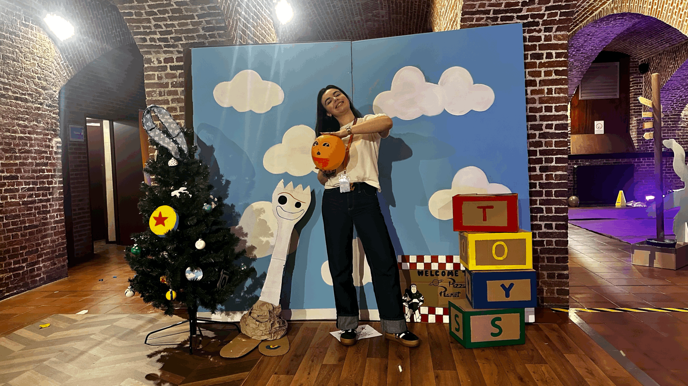
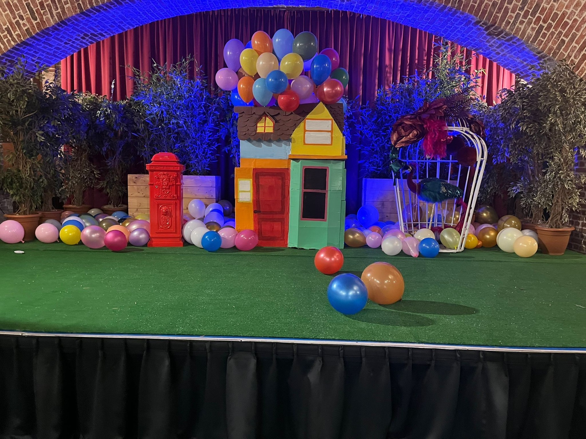
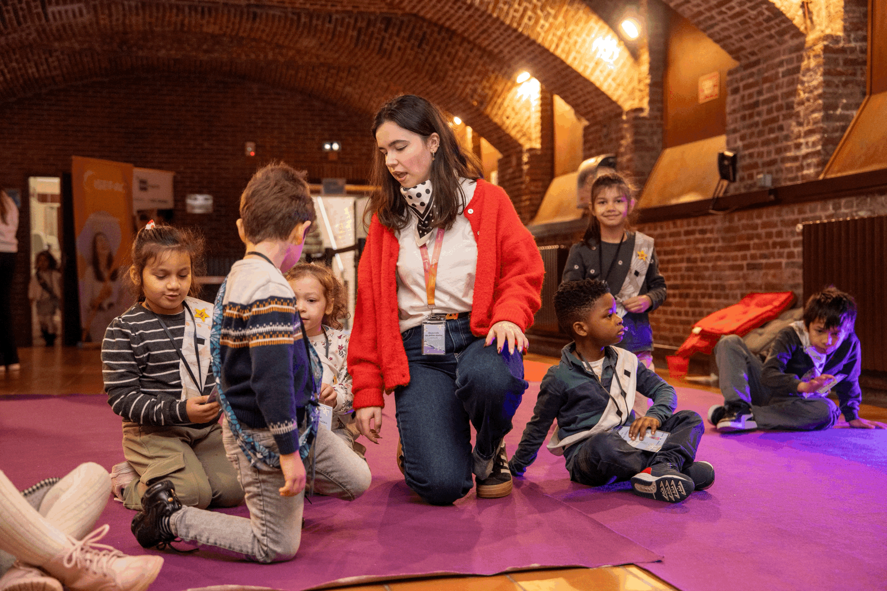
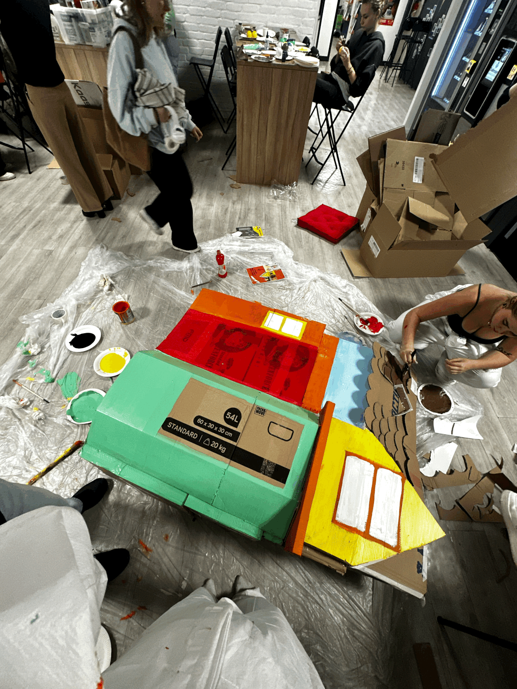

Événement caritatif — 3 jours
Giving
Tuesday
Trois jours d'un événement caritatif immersif sous le signe de l'univers Pixar. Entre olympiades, journée solidaire en partenariat avec La Sauvegarde du Nord et soirée partenaires, un projet qui unit scénographie, émotion et engagement.





Le projet
Fédérer autour d'une cause, créer une expérience immersive
Le Giving Tuesday est une initiative internationale dédiée à la générosité et à l'engagement solidaire. Dans sa déclinaison au sein du LAB ISEFAC Lille, l'événement s'est déployé sur trois jours avec une ambition claire : créer une expérience à la fois festive, émotionnelle et porteuse de sens, en fédérant étudiants, bénévoles et partenaires autour d'une cause caritative.
L'univers Pixar a été choisi pour son pouvoir évocateur universel — un monde de couleurs, d'émotions et de personnages qui parlent à tous, et qui résonne parfaitement avec un projet centré sur l'humain et la générosité. Toute la scénographie a été pensée et réalisée pour recréer cet univers de façon immersive, du détail de la décoration au parcours visiteur.
Ce projet a été mené en collaboration étroite avec des professionnels de l'agence Alive, ce qui m'a permis d'évoluer dans un contexte semi-professionnel exigeant, tout en apportant ma propre créativité et mon sens de l'organisation.
Programme
Trois temps forts, trois ambiances
Jour 1 — Les Olympiades
Jeux collectifs et animations inspirés des univers Pixar. Une journée
pensée pour créer du lien entre les participants et insuffler l'énergie
festive qui donnera le ton à l'ensemble de l'événement.
Jour 2 — Journée des Petites Étoiles
En partenariat avec La Sauvegarde du Nord, cette journée a accueilli
des enfants accompagnés par l'association. Un moment fort, chargé
d'émotion, pensé pour leur offrir une expérience magique et mémorable
au cœur de l'univers Pixar.
Jour 3 — Soirée partenaires
Clôture de l'événement avec les partenaires institutionnels et associatifs.
Une soirée plus formelle, mais toujours ancrée dans l'atmosphère chaleureuse
et engagée de l'ensemble du projet.
Mes missions
Conception, réalisation et coordination
- Conception et réalisation complète des décors dans l'univers Pixar : structures, éléments visuels, mise en scène des espaces
- Coordination des bénévoles sur les trois jours : briefing, gestion des équipes, répartition des rôles
- Gestion opérationnelle en collaboration avec les professionnels de l'agence Alive
- Organisation de la Journée des Petites Étoiles en lien avec La Sauvegarde du Nord
- Suivi du planning sur la durée de l'événement et adaptation aux imprévus
- Participation à la réflexion sur le parcours visiteur et l'expérience globale
Bilan
Scénographie, collectif et sens
Ce projet a confirmé ce que je pressens depuis le début de ma formation : la scénographie est au cœur de ma pratique. Concevoir un décor, c'est raconter une histoire sans mots et faire entrer les gens dans un univers qui les touche avant même qu'ils aient échangé le premier mot.
Travailler aux côtés de l'agence Alive m'a aussi appris l'importance de la co-construction entre étudiants et professionnels. Un niveau d'exigence supplémentaire qui m'a beaucoup fait grandir sur le plan opérationnel et relationnel.